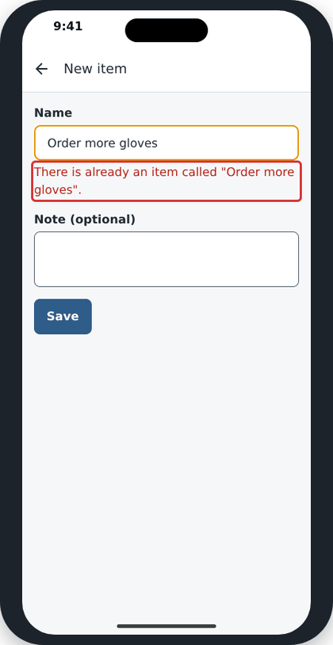

🎓 Lesson 10.1: Final Project
For thirty-five lessons you built someone else's app. Now you build your own: a phone app for a client, from a brief, planned before it is coded, tested before it is trusted, and put in real people's hands without spending a cent on store accounts. Today you choose the brief, plan it with everything your journal already holds, set up a starter that has the whole course's toolkit in it, and finish the first milestone. The weeks after today are yours.
🎯 Learning Objectives
By the end of this lesson, you will be able to:
- Choose a client brief (or size your own idea) by its people, must-haves, device features and data, and write a charter with a clear "out of scope"
- Plan a phone app before coding it: types, screens, data, storage, offline behavior, permissions, privacy and the release, from your journal's notes
- Set up the course's verified starter and explain what each of its parts does and which lesson it comes from
- Build Milestone 1: your types next to the example, sample data, and the mock API's rules with a test for each one
- Plan the rest of the project in milestones with honest hours, and pick a launch that needs no paid account
📦 The final-project kit
Download final-project-kit.zip: the planning worksheet, the seven client briefs, the rubric, the peer review checklist and the starter project, each explained in its README. There is no Shoreline Crew code for this lesson: the app you build today is your own.
In This Lesson
👋 Welcome: Your App, Your Client
Shoreline Crew taught you the craft one piece at a time, always with the next step written down. A real project does not come like that. A client tells you what their people do all day and what goes wrong; you decide what the app is, what it is not, which phones it must work on, where its data lives, what it asks permission for, and how it gets into people's hands. Then you build it, and somebody else checks it.
That is the final project. Over the next weeks you build a phone app of your own from a client brief, with everything from the course: native screens and navigation, server data and offline behavior, device features with honest permission questions, motion and accessibility, tests and CI, variants and builds. Today you lay its keel:
- You choose a brief (seven are in the kit, or your own idea, sized with the kit's rules) and write its charter.
- You plan it with a worksheet whose sections are the "For your own app" notes you wrote in every lesson.
- You set up the starter, a verified Expo project with the course's conventions and none of Shoreline Crew, which runs on any phone with no server.
- You finish Milestone 1: your names and ids, your types, your sample data and your mock API's rules with tests, pushed with a green CI run.
Why it matters for your work: employers and clients rarely ask "do you know React Native?". They ask "show me something you built, and tell me why you built it that way". A finished app with a plan, tests, a privacy inventory and a build on a phone answers both questions at once, and the worksheet is the story you tell in the interview. It is also the honest test of the course: the volunteers on the beach with one bar of signal were Shoreline Crew's people; now you get to decide who yours are.
🌱 Stuck is part of the plan
Somewhere in the next weeks you will hit a wall the lessons never showed you: a library that behaves differently on Android, a test that passes alone and fails in the suite, a screen that looks fine until the text is large. That is not a sign you are not ready. It is the first time you are working the way developers work every day: read the red screen, read the terminal, make the problem smaller, write down what you tried. The worksheet's time log has a column for "what surprised me" because surprises are where most of the learning happens.
📋 How the Final Project Works
Everything you need is in final-project-kit.zip:
| File | What it is | When you use it |
|---|---|---|
briefs.md | Seven client briefs for phone apps, and the size rules for your own idea | Today, Step 1 |
worksheet.md | The plan: 17 sections, from the charter to the launch, each naming the lessons whose journal notes feed it | Today (a first pass), then at the start of every milestone |
starter/ | An Expo SDK 58 project with the course's conventions, an example Item, its own mock API and 22 passing tests | Today, Steps 3 to 7 |
rubric.md | Ten rows, one per area of the course, each scored 0 (not yet), 1 (meets) or 2 (strong) | Before you start (so you know the target) and at the end |
peer-review.md | The checklist a reviewer follows on your phone build and your repository, about 90 minutes | Milestone 7, both ways |
The project is done when no row of the rubric is "not yet", a peer has reviewed it, and you have answered every point of their review. The lesson's 155 minutes cover today's part. The whole project is about 30 more hours, usually 25 to 35: more than any lesson, less than it sounds when it is spread over four to six weeks of a few sessions each. Lesson 10.2 can be read in between; it is about working on real mobile projects, and your project will give it a lot to connect to.
💡 Mental model: your own boat
Shoreline Crew was a crew boat: you joined it, learned every rope, and sailed where the lessons pointed. The final project is your own boat. The starter is a sound hull with the rigging already set (the course's conventions), the brief is the voyage a client asked for, and the worksheet is the chart you mark up in the harbor before you leave: where the shallows are (offline, permissions), where you will put in for supplies (milestones), and which harbor you are sailing to (the launch). Nobody checks a chart in the middle of a storm for the first time.
🗂️ The Client Briefs
Each brief in briefs.md describes a fictional client the way a real one would: who they are, who uses the app and where, three to six must-haves, what they already have (your sample data), what is out of scope, and notes on the decisions that make it interesting. Two lines matter most on a phone, so every brief states them plainly: which device features are in scope, and how the data is served.
| Brief | People, in one line | Device features in scope | Data |
|---|---|---|---|
| 1. Copperline Couriers | Bicycle couriers on a run of stops, gloves on, patchy signal | Camera (proof photo), maps link, haptics, offline queue | The brief's own mock API |
| 2. Kestrel Ridge Trail Stewards | Volunteers reporting trail damage deep in the woods | Location, camera and library, a map, offline queue | The brief's own mock API |
| 3. Pocket Pantry | A household using up food before it spoils | Local reminders, sharing, haptics, gestures | Local-only (SQLite), no server |
| 4. Fernway Swim School | Parents juggling children's swim classes | Secure sign-in, reminders, deep links, haptics | The brief's own mock API |
| 5. Ostrander Makerspace | Members borrowing workshop tools | Camera, haptics, reminders; QR scanning only as a stretch | The brief's own mock API |
| 6. Brightwater Birding Circle | Birders logging sightings with one free hand | Location (rounded), a 350-row list, Reanimated, file export | Local-only (SQLite + a bundled list) |
| 7. Cinder Lane Pottery Studio | Members and a studio tech tracking pieces through the kiln | Camera and library, tabs with a badge, offline reading | The brief's own mock API |
"The brief's own mock API" means the starter's src/mock-api: you write the routes and rules the brief describes, the app uses them in demo mode, and the tests use the very same rules (you will see how in "The Starter"). "Local-only" means the data lives on the phone (Lesson 5.3) and no server exists at all. No brief needs a paid service, and none needs a server you have to keep running.
Choose the brief whose people you can picture best, not the one with the most features. If two appeal to you, pick the one with a device feature you found hardest in Module 6: the project is the safest place to get good at it. Your own idea is welcome too: briefs.md ends with size rules (three to six must-haves, five to ten screens, at most two kinds of people, two device features used for a real reason, an offline plan, no paid service), and you write your idea up in the same shape as the briefs before you start, so your reviewer can hold you to it.
⚠️ Health, money and children
An app that handles health data, payments or children's information carries legal and store rules far beyond this course (Lesson 9.4 showed how much the stores ask even for a beach-cleanup app). Fernway Swim School keeps children's data to first names and class times on purpose. If your own idea goes further, shrink it until it doesn't, or treat the privacy section of the worksheet as the hardest part of the project.
🧭 Plan Before You Build
You have been planning this project for thirty-five lessons without writing it down in one place. Every lesson ended with a "For your own app" note, and each note is a section of the worksheet:
| Worksheet section | Your journal notes from | What you decide |
|---|---|---|
| 0 Charter | 1.1 (why mobile; "one thing it must do without a signal") | Who, what must work, what is out of scope and why |
| 1 Phones | 1.2, 9.2 | Which phones, how you test, what needs a development build |
| 2 Types first | 1.3 (the "tide chart" of shared types) | Domain types, unions with Record tables, computed values, what checks outside data |
| 3 Look and feel | 2.1, 2.2, 2.3, 2.5 | Color roles day and night, text variants, pictures, icons, wide screens |
| 4 Screens and navigation | 4.1, 4.2, 4.3, 4.4 | The src/app tree, tabs/stacks/modals, who may open what, links |
| 5 Lists | 3.1, 3.2 | Each list's item, key, states, grouping, length, paging |
| 6 Controls and forms | 2.4, 5.4 | Targets, keyboards, return keys, thumb controls, schemas |
| 7 Data and the mock API | 5.1, 5.2, 8.2 | Addresses, routes and rules, the rule that must never break, query keys, mutations |
| 8 Storage and offline | 5.3, 5.5 | Where each piece of data lives, queues, what offline looks like |
| 9 Device features | 6.1 to 6.5 | Each permission's moment, reason and "no"; photos, places, messages, buzzes, files |
| 10 Motion and gestures | 7.1, 7.2, 7.3 | What each motion explains, Reduce Motion, the button behind every gesture |
| 11 Accessibility | 8.1 | Each screen and state for a screen reader and at the largest text |
| 12 Tests and performance | 8.2, 8.3, 8.4 | The logic whose failure hurts, the vital screen's tests, what you will measure |
| 13 Config and builds | 9.1, 9.2, 9.3 | Variants, ids, secrets, updates vs new builds |
| 14 Privacy and release | 9.4 | The data inventory, accounts and deletion, the release checklist |
| 15 Launch plan | 9.2, this lesson | Which free launch, which testers, what a store would still need |
| 16 Milestones and time log | this lesson | Your estimate per milestone, then the real hours |
Lesson 9.4 ended with a promise: decide the server, the ids, the data and the deletion story before the first screen. They are sections 7, 13 and 14, and they are cheap to decide on paper and expensive to change later: an app id is permanent once a store has seen it, a "we never send your location" written into the privacy answers constrains every feature after it, and the choice between "the server" and "only the phone" decides half of your code.
Do not try to fill all seventeen sections perfectly today. Step 2 does a first pass of the sections that shape the code (charter, types, screens, data, storage, permissions); the others get filled at the start of the milestone that needs them. A plan you update is worth far more than a perfect plan you never open again.
💡 Types first, again
As in the web course's final project, the first code you write is src/api/types.ts. On a phone it matters even more: the same types are read by the screens, the mock API, the tests, the offline queue (which stores them as JSON on the phone) and, one day, a real server. A DeliveryStatus union with a Record table of labels means that when the client asks for a new status, TypeScript lists every place that has to learn it, before a rider ever sees a blank button.
🧰 The Starter
You could start from npx create-expo-app@latest again and spend a week rebuilding what the course already gave you. Or you could copy Shoreline Crew and spend a week taking beach cleanups out of it. The starter is the middle way: an SDK 58 project made exactly as Lesson 1.2 made Shoreline Crew (the template, then npm run reset-project answering n), with the course's conventions added and nothing specific to any brief. Its own README.md lists every piece and the lesson it comes from; in short:
| Area | Already set up | Lessons |
|---|---|---|
| Look | Color roles light and dark (useTheme, createThemedStyles), Screen with safe areas, AppText variants, a 48-point Button | 2.1 to 2.5, 8.1 |
| Screens | An Expo Router stack: a list with loading, error, empty and pull-to-refresh, an [id] screen, a modal form, not-found, a crash screen | 3.1, 4.1, 4.2, 9.3 |
| Data | A client that checks every answer, ApiError, NetworkError, describeError; TanStack Query factories and mutations; focus and online managers for a phone | 1.3, 5.1, 5.2 |
| Forms | React Hook Form + Zod on a FormScreen, the server's rule under its field | 5.4 |
| Tests | Jest with jest-expo, React Native Testing Library and MSW, Node's fetch put back, a phone-sized window: 22 tests in 6 files | 8.2, 8.3 |
| Ship | app.config.ts with three variants, eas.json (preview and production), a GitHub Actions workflow | 9.1 to 9.4 |
What it leaves out is just as deliberate: tabs, sign-in, SecureStore, SQLite, the offline queue, permissions and every device feature, Reanimated and gestures, expo-dev-client and expo-updates. Each brief needs a different handful of those. You add them with npx expo install when a milestone needs them, copying the pattern from your Shoreline Crew (and adding each plugin to app.config.ts by hand: as Lesson 9.1 found, npx expo install cannot write into a dynamic config).
Where the data comes from
The one genuinely new idea in the starter is its data source. Shoreline Crew needed shoreline-api running on your computer, reachable from the phone over your Wi-Fi: fine for a course, a real obstacle for a tester on another network. The starter reads EXPO_PUBLIC_API_URL (Lesson 5.1) and accepts one extra value, demo:
demo: the client calls the mock API'shandle()inside the app, after a short pause so loading states show. No server, no Wi-Fi, no WSL networking: Expo Go on any phone works, and so does a preview build a tester installs anywhere. The data is in memory and starts again when the app restarts, and the first screen says so.- An address (
http://192.168.1.42:4000while developing,https://…for a store build): the client sends real requests withfetch, exactly as Shoreline Crew did. The checks on every answer, the errors and the messages are the same code. - In the tests, MSW answers requests to a server address with the same
handle(). So the screens' tests go through the client's real fetch path, and the mock API's rules are the ones demo mode uses: one set of rules, tested once, used everywhere.
The mock API is plain TypeScript that takes { method, path, body } and returns { status, body }, with the same status codes and error bodies (ApiErrorBody) a real API would send. It uses no Request, Response or URL classes, so it runs the same on a phone, in the web preview and in Node. Each resource gets a file (the example's is src/mock-api/items.ts) and one line in a table in handle.ts.

EXPO_PUBLIC_API_URL=demo): no server to start, on any phone. The note says so on the first screen. Web preview: on a phone the header and the list look native.🛑 Demo data is not a back end
The mock API lives in each phone's memory: two phones never see each other's changes, and everything is gone after a restart. That is honest for a demo and for testers, and the first screen says so. It is not a way to ship: the starter's app.config.ts refuses a production build with demo (and with plain http://), as Lesson 9.1's guard did. A brief with local-only data keeps its data in SQLite instead (Lesson 5.3) and changes that check on purpose, with a sentence in the worksheet saying why.
🪜 Milestones
Thirty hours is too long to work on without checkpoints. The worksheet splits the project into seven milestones, each ending with something that works and a green CI run:
| Milestone | Done when | Typical hours |
|---|---|---|
| 1 Foundations (today) | Names and ids yours; types, sample data, the mock API's rules and their tests; a first green CI run | 3 to 4 |
| 2 Walking skeleton | Every screen in the worksheet exists and is reachable; the main list and detail show your (mock) data; Item is deleted | 4 to 6 |
| 3 The main journey | Every must-have works end to end in Expo Go, forms and changes included; data stored where the worksheet says | 5 to 8 |
| 4 Phone features and offline | The brief's device features with their permission paths; the offline plan works on a real phone | 4 to 6 |
| 5 Quality | Accessibility pass, motion with Reduce Motion, screen tests, one performance measurement | 4 to 6 |
| 6 Ship | Variants and profiles, privacy inventory, release checklist, README, your launch | 3 to 4 |
| 7 Review | Peer review given and received, every point answered, a reflection written | 2 to 3 |
A walking skeleton (Milestone 2) is the thinnest version of the whole app that runs end to end: every screen, ugly but real, wired to real data. It comes before any screen gets polished because it shows the problems that only appear when the pieces meet, such as a navigation shape that does not fit the brief, while they are still cheap to fix. Device features come after the main journey on purpose: a camera button on a screen that does not save anything yet proves nothing.
Write your own estimate next to each typical number before you start a milestone, and the real hours after. The difference is not a grade. It is the most useful number you will take into Lesson 10.2's discussion of estimating, and into every estimate a client ever asks you for.
🚀 Launching Without a Store Account
Lesson 9.4 was honest about the stores: Apple's membership is a yearly fee, Google Play's a one-time fee, a new personal Play account needs a closed test with twelve testers for two weeks, and a store app needs an https server. None of that is required here. "Shipped" in this project means real people used your app on real phones, and every option for that is free:
| Launch | What it takes | Good for |
|---|---|---|
| A preview build from an internal distribution link (Lesson 9.2) | A free Expo account and the free plan's build queue; the starter's preview profile already uses demo data, so testers need no server. Android installs from the link; iPhone builds need the Apple membership | The closest thing to a store app: testers install it like any other app |
| A recorded demo on a real phone | Expo Go (or a development build) on your phone, and the phone's own screen recording | Every brief, including iPhone-only testers and apps that need a development build |
| A recorded demo in the web preview | Only for a brief with no device features in its main journey | Rarely: most briefs' main journeys need the phone |
| Google Play internal testing or TestFlight | The store accounts (paid), only if you already have them | Optional: one way to reach "strong" in the launch row, never the only one |
📱 On your phone
Both phones can record their own screen: on an iPhone, Screen Recording in Control Center (add it in Settings if it is not there); on an Android phone, Screen record in Quick Settings (the name varies by maker). A two-minute recording of the main journey, with the narration "here a rider marks a stop delivered without signal…", is often more convincing to an employer than a link they cannot install. These controls could not be checked on a phone for this lesson: if yours differ, your phone's help pages name them.
✅ What "Done" Means
The rubric has ten rows, one per area of the course. Each scores 0 (not yet), 1 (meets) or 2 (strong), and the project is complete when no row is 0. Read it before you start: it is the target, not a surprise at the end.
| # | Row | Modules | "Meets" in one line |
|---|---|---|---|
| 1 | Plan | 10, every journal | Every worksheet section filled for this brief, with reasons and a time log |
| 2 | Screens and navigation | 2, 4 | Every planned screen works, safe areas, light and dark, not-found, a deep link |
| 3 | Data and server state | 1, 3, 5.1, 5.2 | Types with complete tables, every answer checked, Query and mutations, every state in words |
| 4 | Storage and offline | 5.3, 5.5 | Each piece of data in the right store, secrets only in SecureStore, the offline plan works |
| 5 | Forms and input | 2.4, 5.4 | Schemas, the right keyboards, errors under fields, nothing under the keyboard |
| 6 | Device features | 6 | Each feature works on a phone, asked in context, with a way forward after "no" |
| 7 | Accessibility and motion | 7, 8.1 | Labels and roles, 44/48-point targets, the largest text, Reduce Motion, axe clean |
| 8 | Tests, CI and performance | 8.2 to 8.4 | Rules, logic and two screens tested, lint clean, CI green, one measurement |
| 9 | Config and release | 9.1 to 9.4 | Your own variants and ids, profiles with tests, a data inventory, the release checklist walked |
| 10 | Launch, review and reflection | 9.2, 10 | A free launch (preview build or recording), a README, a peer review given and received |
Notice what row 9 asks for and what it does not: you walk Lesson 9.4's release checklist and mark every line done, not possible in this project, or to do. "Not possible yet: no https server" is an honest, passing answer. Pretending is not.
⚠️ Common Mistakes
The outputs below were printed by the real tools on the worked example of this lesson (Copperline Couriers, Milestone 1).
⚠️ Building screens before the plan and the types
The run sheet screen is the fun part, so it is tempting to start there and "add the types later". Two weeks in, the status is a string compared in five places, one of them spelled "pickedUp". Types and rules first take an evening (Steps 5 and 6) and save the weeks.
⚠️ Adding a status without its tables
The client asks for a new status, "returned to the shop", and you add it to the union. That is exactly when the Record tables earn their keep:
-export type DeliveryStatus = 'assigned' | 'picked-up' | 'delivered' | 'failed';
+export type DeliveryStatus = 'assigned' | 'picked-up' | 'delivered' | 'failed' | 'returned';npx tsc --noEmitExpected output
src/utils/deliveries.ts:4:14 - error TS2741: Property 'returned' is missing in type '{ assigned: string; 'picked-up': string; delivered: string; failed: string; }' but required in type 'Record<DeliveryStatus, string>'.
4 export const deliveryStatusLabels: Record<DeliveryStatus, string> = {
~~~~~~~~~~~~~~~~~~~~
src/utils/deliveries.ts:13:14 - error TS2741: Property 'returned' is missing in type '{ assigned: "picked-up"[]; 'picked-up': ("delivered" | "failed")[]; delivered: never[]; failed: never[]; }' but required in type 'Record<DeliveryStatus, readonly DeliveryStatus[]>'.
13 export const nextSteps: Record<DeliveryStatus, readonly DeliveryStatus[]> = {
~~~~~~~~~
Found 2 errors in the same file, starting at: src/utils/deliveries.ts:4Not a mistake in the code: a to-do list. Each error is a decision the new status needs (its words; which steps lead to it and from it). An array of statuses would have stayed silent, and the run sheet would have shown a stop with no label and no buttons.
⚠️ Checking request bodies with the form's schema
The New item form's schema turns an empty note into null. Use that same schema in the mock API to check what the app sends, and every valid request is refused, because the body is the form's output and the schema checks its input:
- const parsed = newItemBodySchema.safeParse(body);
+ const parsed = newItemSchema.safeParse(body);npm test -- --watchAll=false src/mock-api/itemsExpected output (trimmed)
FAIL src/mock-api/items.test.ts
✓ lists the items, and only the open ones when asked (8 ms)
✓ answers 404 for an item that does not exist
✕ adds a new item, open, at the top of the list (4 ms)
✓ refuses a new item without a name, with the message for the field (1 ms)
✕ never lets two items have the same name (a rule only the server can check) (1 ms)
✓ changes an item between open and done
✓ answers 404 for a path it does not know (1 ms)
● adds a new item, open, at the top of the list
expect(received).toMatchObject(expected)
- Expected - 4
+ Received + 8
Object {
"body": Object {
- "id": "i7",
- "name": "Buy tape",
- "status": "open",
+ "error": "bad_request",
+ "fieldErrors": Object {
+ "note": Array [
+ "Invalid input: expected string, received null",
+ ],
},
- "status": 201,
+ "message": "Some fields need fixing.",
+ },
+ "status": 400,
}TypeScript cannot catch this one: both schemas produce the same type. The tests do. That is why the starter shares the field rules (name, note in src/api/schemas.ts) and keeps two schemas: newItemSchema for the form and newItemBodySchema for what the API accepts. Your brief's forms need the same pair.
⚠️ Trying a store build on demo data
Demo mode makes everything easy, right up to the production build:
APP_VARIANT=production npx expo configIn PowerShell: $env:APP_VARIANT = "production"; npx expo config; Remove-Item Env:APP_VARIANT.
Expected output (trimmed)
env: load .env.local
env: export EXPO_PUBLIC_API_URL
Error: Error reading Expo config at ~/projects/copperline-couriers/app.config.ts:
A production build needs an https:// EXPO_PUBLIC_API_URL, not "demo".
Error: A production build needs an https:// EXPO_PUBLIC_API_URL, not "demo".
at Object.<anonymous> (~/projects/copperline-couriers/app.config.js:22:11)
...The guard working, as in Lesson 9.1. A store app needs a server every user's phone can reach over https (or, for a local-only brief, no server at all and a changed guard). For the project, the preview profile's demo is the launch; the production row of the release checklist says "not possible yet" unless you build a real back end.
⚠️ Putting the project inside the course folder
If your shoreline folder is a Git repository (the web course's, or your own), a new project copied inside it becomes a repository inside a repository, and Git warns about an "embedded repository" when you add it (Lesson 9.3's FAQ). Keep the final project in its own folder next to shoreline, never inside it. Do not copy Shoreline Crew's whole folder either: its ids, its com.example.shorelinecrew tests and its dozens of files about beach cleanups will follow you into every milestone.
🛠️ Project: Your App, Milestone 1
You choose a brief, plan the parts that shape the code, set up the starter, make it yours and build Milestone 1. The code below is the worked example, Copperline Couriers (brief 1): read it to see the shape, then write the same pieces for your own brief. Shoreline Crew stays as Lesson 9.4 left it. Have briefs.md, worksheet.md and your journal open side by side.
Step 1: Choose a brief and write the charter (10 min)
Read the seven briefs (or write up your own idea in the same shape, checking the size rules). Pick one. Copy worksheet.md somewhere you will keep it for now (it moves into your project in Step 3) and fill in section 0, the charter. Copperline's, as an example of the length:
| Question | Copperline Couriers |
|---|---|
| Who is the client? | A three-rider bicycle courier co-op delivering for shops in one town |
| Who uses it, where, to do what? | Riders, on the bike, gloves on, one bar of signal: see the next stop, mark it picked up and delivered with a photo |
| Must-haves | The run sheet; a stop's screen with Open in Maps; status one step at a time; proof photo; changes saved without signal and sent once |
| Out of scope, and why | Live GPS tracking (battery, privacy, a server we do not have); payments; push from dispatch (needs a server and a development build) |
| Without a signal it must… | Let a rider mark a stop delivered, and send it later, exactly once |
| How the client knows it works | A rider does a whole morning's run on the app without calling dispatch |
Step 2: A first pass of the plan (15 min)
Fill in the sections that shape the code, quickly, from your journal: 2 (types: a rough list is enough, Step 5 writes them), 4 (the src/app tree), 7 (the mock API's routes and rules, and the one rule that must never break), 8 (where each piece of data lives, and what offline looks like) and 9 (every permission, its moment and its "no"). Write "later: Milestone N" in the sections you skip. For Copperline, the must-never-break rule is: a delivery never skips a step and never changes once it is finished, whatever a phone sends. It gets its own test in Step 6.
Step 3: Set up the starter (10 min)
Unzip final-project-kit.zip, then copy the starter folder to where you keep projects, next to (never inside) your shoreline folder, under your project's name. On macOS, Linux or Git Bash:
cp -R final-project-kit/starter ~/projects/copperline-couriers
cp final-project-kit/worksheet.md ~/projects/copperline-couriers/
cd ~/projects/copperline-couriers
npm ci
cp .env.example .env.local
npx expo startIn PowerShell, the copies are different (the rest is the same):
Copy-Item -Recurse final-project-kit\starter $HOME\projects\copperline-couriers
Copy-Item final-project-kit\worksheet.md $HOME\projects\copperline-couriers\
cd $HOME\projects\copperline-couriers
npm ci
Copy-Item .env.example .env.local
npx expo startnpm ci installs exactly the versions in the starter's lockfile (the ones this lesson was checked with). Scan the QR code with Expo Go, or press w for the web preview: you should see the screen in the picture under "The Starter", with "Demo data" at the top. Tap a row, mark it done, go back, add an item, then try to add one with a name that is already on the list:

src/mock-api, tested in Jest, used by demo mode.Leave Metro running. In a second terminal, run the three checks you will run after every step from now on, each in the project folder: npx tsc --noEmit, npx expo lint and npm test -- --watchAll=false. The first two print nothing; the tests end with Tests: 22 passed, 22 total.
📱 On your phone
Because the starter answers from its own mock API, Expo Go on your phone should show the items even on a different network from your computer's (Metro itself still needs your phone to reach the computer, as in Lesson 1.2; npx expo start --tunnel is the way round a network that blocks it). The starter has not been opened on a real phone for this lesson: the web preview, the tests and the Android and iOS bundles were checked here.
Step 4: Make it yours (10 min)
Give the three variants your app's names, and the ids a domain your client owns (Lesson 9.4: permanent once a store has seen them). Copperline does not know its domain yet, so it keeps com.example with a note, which is honest for now and on the release checklist as "to do":
// One project, three apps that can sit side by side on a phone, each with its own name and id
const variants = {
// com.example until the co-op says which domain it owns: then once, before the first build
development: { name: 'Copperline Dev', appId: 'com.example.copperline.dev' },
preview: { name: 'Copperline Preview', appId: 'com.example.copperline.preview' },
production: { name: 'Copperline', appId: 'com.example.copperline' },
};Then, in the same file, slug (copperline-couriers) and scheme (copperline); "name" in package.json; and the expected names and ids in app.config.test.ts, which fails until you do (Lesson 9.4's Common Mistakes showed that output). Put your brief's colors into src/theme/colors.ts now or in Milestone 2; the roles stay, the values change. Run the three checks: all green.
Step 5: Types and sample data (20 min)
Add your brief's types to src/api/types.ts, next to the example Item: the example screens keep working, so every check stays green while you build. Copperline's, below the example's types:
// ---------------------------------------------------------------- Copperline Couriers (Milestone 1)
/** A day of deliveries: "2030-04-02" */
export type DateString = string;
/** A time of day on the run sheet: "09:30" */
export type TimeString = string;
export interface Rider {
id: string;
name: string;
}
/** Where a parcel is picked up or dropped off */
export interface Place {
name: string;
address: string;
/** "Ring the side bell", or null: no note */
note: string | null;
}
/** One step at a time: assigned -> picked-up -> delivered, or picked-up -> failed */
export type DeliveryStatus = 'assigned' | 'picked-up' | 'delivered' | 'failed';
export interface Delivery {
id: string;
runDate: DateString;
riderId: string;
pickup: Place;
dropoff: Place;
/** The promised window at the drop-off */
window: { from: TimeString; to: TimeString };
status: DeliveryStatus;
/** Why it failed ("Nobody home"): only when status is 'failed' */
failedReason: string | null;
/** The proof-of-delivery photo the API keeps: only when status is 'delivered' */
proofPhotoId: string | null;
}
/** What the rider sends: the next status, and what that status needs */
export type DeliveryChanges = Pick<Delivery, 'status'> &
Partial<Pick<Delivery, 'failedReason' | 'proofPhotoId'>>;Each choice is a decision from the worksheet: a delivery's status is a union, not a string; a photo is an id the API keeps, not a file path on one phone; "no note" is null; and what a rider may send (DeliveryChanges) is made from Delivery with Pick and Partial, so the two can never drift apart. Then the tables every union needs, in src/utils/:
import type { DeliveryStatus } from '@/api/types';
// Words for each status, for the run sheet and for screen readers
export const deliveryStatusLabels: Record<DeliveryStatus, string> = {
assigned: 'Assigned',
'picked-up': 'Picked up',
delivered: 'Delivered',
failed: 'Failed',
};
// The only moves a delivery can make: the mock API refuses anything else (409), and the screen
// offers only these buttons. A Record, so a new status cannot be forgotten here.
export const nextSteps: Record<DeliveryStatus, readonly DeliveryStatus[]> = {
assigned: ['picked-up'],
'picked-up': ['delivered', 'failed'],
delivered: [],
failed: [],
};
export function isDeliveryStatus(value: unknown): value is DeliveryStatus {
return typeof value === 'string' && Object.hasOwn(deliveryStatusLabels, value);
}Last, sample data in src/mock-api/db.ts: 6 to 12 records per type, as the brief's "They already have" describes, and one awkward on purpose (a long name, a missing note, the edge of a rule), so the screens meet it in Milestone 2 instead of in front of the client. Copperline's run sheet always falls on today, so the demo never looks stale:
/** Today in the phone's time zone, "2030-04-02": the run sheet is always today's */
function today(): string {
const now = new Date();
const pad = (n: number) => String(n).padStart(2, '0');
return `${now.getFullYear()}-${pad(now.getMonth() + 1)}-${pad(now.getDate())}`;
}
export const sampleRiders: Rider[] = [
{ id: 'r1', name: 'Noor Haddad' },
{ id: 'r2', name: 'Mateo Lindqvist' },
];
// ...
function sampleDeliveries(): Delivery[] {
return [
stop('d1', 'r1', { name: 'Gearhouse Cafe', address: '3 Mill Street', note: null },
['08:00', '09:00'], 'delivered'),
stop('d2', 'r1', { name: 'Harbor Print Shop', address: '48 Quay Road', note: 'Side door' },
['09:00', '10:00'], 'picked-up'),
stop('d3', 'r1', { name: 'Lantern Books', address: '7 Chapel Row', note: null },
['10:00', '11:00']),
// The awkward one: a long name, address and note, for the narrowest phone and the largest text
stop('d4', 'r1', {
name: 'Riverside Community Center, East Wing',
address: 'Unit 14B, Riverside Business Park, 220 Old Canal Road',
note: 'Ask at the front desk; the loading bay closes at noon on weekdays.',
}, ['11:00', '12:00']),
stop('d5', 'r2', { name: 'Pinecone Florist', address: '19 Elm Parade', note: null },
['09:30', '10:30']),
stop('d6', 'r2', { name: 'Tidewater Dental', address: '5 Beacon Hill', note: 'Reception' },
['13:00', '14:00']),
];
}
export const db = { items: sampleItems(), deliveries: sampleDeliveries(), nextNumber: 7 };
/** Put the sample data back (every test starts from it) */
export function resetDb(): void {
db.items = sampleItems();
db.deliveries = sampleDeliveries();
db.nextNumber = 7;
}Step 6: The mock API's rules, with tests (30 min)
Now the brief's API, one file per resource, in the shape of the example's src/mock-api/items.ts. Every rule from worksheet section 7 is a branch that answers with the right status code and an error body the app already understands (ApiErrorBody, with fieldErrors when the message belongs under a field):
// Copperline Couriers' /deliveries: a rider's run sheet, and status changes one step at a time
import type { Delivery } from '@/api/types';
import { db } from '@/mock-api/db';
import { answer, type MockResponse, problem, type ResourceRequest } from '@/mock-api/respond';
import { deliveryStatusLabels, isDeliveryStatus, nextSteps } from '@/utils/deliveries';
type Change = Pick<Delivery, 'status' | 'proofPhotoId' | 'failedReason'>;
/** Text with something in it, trimmed; anything else is null */
function textIn(record: object, key: string): string | null {
const value: unknown = key in record ? Reflect.get(record, key) : null;
return typeof value === 'string' && value.trim() !== '' ? value.trim() : null;
}
/** "An Assigned delivery", "A Picked up delivery" */
function aDelivery(status: Delivery['status']): string {
const label = deliveryStatusLabels[status];
return `${/^[AEIOU]/.test(label) ? 'An' : 'A'} ${label} delivery`;
}
/** PATCH /deliveries/:id: the change it asks for, checked against the rules, or the refusal */
function checkChange(delivery: Delivery, body: unknown): Change | MockResponse {
const changes = typeof body === 'object' && body !== null ? body : {};
const status: unknown = Reflect.get(changes, 'status');
if (!isDeliveryStatus(status)) {
return problem(400, 'bad_request', 'Choose the next status.', {
status: ['Choose the next status.'],
});
}
// The rule the server must keep, whatever a phone sends: no skipped or repeated steps
const allowed = nextSteps[delivery.status];
if (!allowed.includes(status)) {
const message =
allowed.length === 0
? `${aDelivery(delivery.status)} is finished: it cannot change.`
: `${aDelivery(delivery.status)} can only move to ${allowed
.map((next) => deliveryStatusLabels[next])
.join(' or ')}.`;
return problem(409, 'conflict', message);
}
const change: Change = {
status,
proofPhotoId: status === 'delivered' ? textIn(changes, 'proofPhotoId') : null,
failedReason: status === 'failed' ? textIn(changes, 'failedReason') : null,
};
if (status === 'delivered' && change.proofPhotoId === null) {
const message = 'Add a photo of the parcel at the door.';
return problem(400, 'bad_request', message, { proofPhotoId: [message] });
}
if (status === 'failed' && change.failedReason === null) {
const message = 'Say why it could not be delivered.';
return problem(400, 'bad_request', message, { failedReason: [message] });
}
return change;
}
export function handleDeliveries({ method, id, query, body }: ResourceRequest): MockResponse {
// GET /deliveries?rider=r1: one rider's run sheet, in the order of the drop-off windows
if (id === undefined && method === 'GET') {
const run = db.deliveries
.filter((delivery) => query.rider === undefined || delivery.riderId === query.rider)
.sort((a, b) => a.window.from.localeCompare(b.window.from)); // filter made a new array
return answer(200, run);
}
const delivery = db.deliveries.find((candidate) => candidate.id === id);
if (delivery === undefined) {
return problem(404, 'not_found', 'There is no delivery with this id.');
}
if (method === 'GET') {
return answer(200, delivery);
}
if (method === 'PATCH') {
const checked = checkChange(delivery, body);
if (!('proofPhotoId' in checked)) {
return checked; // a refusal: 400 or 409
}
Object.assign(delivery, checked);
return answer(200, delivery);
}
return problem(400, 'bad_request', `${method} /deliveries/${delivery.id} is not supported.`);
}The nextSteps table does double duty: the mock API refuses any other move with a 409, and in Milestone 2 the stop's screen will offer only those buttons. The rule lives in one place, and the server keeps it even if a screen has a bug. Register the resource with one line in src/mock-api/handle.ts (and its import):
// The first part of the path picks the resource: /items/i3 -> handleItems with id 'i3'
const resources: Record<string, (request: ResourceRequest) => MockResponse> = {
items: handleItems,
deliveries: handleDeliveries,
};Then a test for every rule, as plain function calls: no network, no screens, milliseconds per test (Lesson 8.2). The last one is the worksheet's must-never-break rule, named so in the test:
// Copperline Couriers' rules (Milestone 1): one test per rule, before any screen exists
import { resetDb } from '@/mock-api/db';
import { handle } from '@/mock-api/handle';
beforeEach(() => resetDb());
function change(id: string, body: unknown) {
return handle({ method: 'PATCH', path: `/deliveries/${id}`, body });
}
it("lists one rider's run sheet in the order of the drop-off windows", () => {
const run = handle({ method: 'GET', path: '/deliveries?rider=r1' });
expect(run.status).toBe(200);
expect(run.body).toEqual(['d1', 'd2', 'd3', 'd4'].map((id) => expect.objectContaining({ id })));
});
it('moves a delivery one step at a time, never skipping one', () => {
expect(change('d3', { status: 'delivered' })).toEqual({
status: 409,
body: { error: 'conflict', message: 'An Assigned delivery can only move to Picked up.' },
});
expect(change('d3', { status: 'picked-up' })).toMatchObject({
status: 200,
body: { status: 'picked-up' },
});
});
it('needs a photo to deliver and a reason to fail', () => {
expect(change('d2', { status: 'delivered' })).toMatchObject({
status: 400,
body: { fieldErrors: { proofPhotoId: ['Add a photo of the parcel at the door.'] } },
});
expect(change('d2', { status: 'failed', failedReason: ' ' })).toMatchObject({
status: 400,
body: { fieldErrors: { failedReason: ['Say why it could not be delivered.'] } },
});
expect(change('d2', { status: 'delivered', proofPhotoId: 'p9' })).toMatchObject({
status: 200,
body: { status: 'delivered', proofPhotoId: 'p9', failedReason: null },
});
});
it('never changes a finished delivery (the rule that must not break)', () => {
expect(change('d1', { status: 'failed', failedReason: 'Nobody home' })).toMatchObject({
status: 409,
body: { message: 'A Delivered delivery is finished: it cannot change.' },
});
});npm test -- --watchAll=false src/mock-api/deliveriesExpected output (times will differ)
PASS src/mock-api/deliveries.test.ts
✓ lists one rider's run sheet in the order of the drop-off windows (12 ms)
✓ moves a delivery one step at a time, never skipping one (1 ms)
✓ needs a photo to deliver and a reason to fail (1 ms)
✓ never changes a finished delivery (the rule that must not break)
Test Suites: 1 passed, 1 total
Tests: 4 passed, 4 total
Snapshots: 0 total
Time: 0.318 s, estimated 1 s
Ran all test suites matching src/mock-api/deliveries.Because demo mode and the tests share these rules, your app will follow them the moment a screen asks: the next milestone builds screens on an API that already works and is already tested. If a test fails, read the diff Jest prints the way you read a red screen: expected on one side, received on the other, and the line that asked.
Step 7: Commit, push, and start the time log (10 min)
Move your worksheet.md into the project if it is not there yet, then make the folder a repository (the starter is meant to be one: .github/workflows/ci.yml sits at its top):
npm test -- --watchAll=false
git init -b main
git add .
git status
git commit -m "Milestone 1: types, sample data and the mock API's rules"Expected output of the tests (trimmed; Copperline's)
PASS src/api/source.test.ts
PASS ./app.config.test.ts
PASS src/monitoring/reportError.test.ts
PASS src/mock-api/deliveries.test.ts
PASS src/mock-api/items.test.ts
PASS src/api/client.test.ts
PASS src/test/screens/items.test.tsx
Test Suites: 7 passed, 7 total
Tests: 26 passed, 26 total
Snapshots: 0 totalgit status must not list .env.local, node_modules or dist (the starter's .gitignore keeps them out). Create an empty repository on GitHub, push as in Lesson 9.3, and watch the Actions tab until the run is green. Then write the first line of the time log in worksheet section 16: today's hours, "Milestone 1", and what surprised you.
✅ Project Completion Checklist
- You chose a brief (or wrote up your own idea within the size rules) and the charter says what is out of scope and why
- Worksheet sections 2, 4, 7, 8 and 9 have a first pass, including the rule that must never break
- The starter runs in Expo Go or the web preview with "Demo data" on its first screen, under your app's name
- Your types sit next to
Itemintypes.ts, every union has itsRecordtables, and the sample data has one awkward record - Each rule of your mock API has a test, the must-never-break rule included, and the three checks pass
- The project is its own repository with a green CI run, and the time log has its first line
🏋️ Hands-on Exercises
Optional, but recommended: each takes ten to twenty minutes, and each moves your own project forward.
🏋️ Exercise 1: The Milestone 2 to-do list
On a new branch (git switch -c skeleton), delete the example's types from src/api/types.ts (ItemStatus, Item, NewItem, ItemChanges) and run npx tsc --noEmit. What does it give you, and in what order would you work through it?
💡 Hint
Read the summary table at the end of the output first: it lists every file that still expects the example, and how many places in each.
✅ Solution
Expected output (the end; Copperline's)
Found 12 errors in 8 files.
Errors Files
4 src/api/client.ts:5
2 src/api/mutations.ts:7
1 src/api/schemas.ts:6
1 src/app/new-item.tsx:9
1 src/components/ItemRow.tsx:4
1 src/mock-api/db.ts:3
1 src/mock-api/items.ts:5
1 src/utils/labels.ts:1That table is Milestone 2's to-do list. A sensible order goes from the data outwards: labels.ts and the mock API's items.ts (delete them, and the items line in handle.ts), db.ts, then client.ts, schemas.ts and mutations.ts (your endpoints instead of the example's), and last the screens and ItemRow, replaced by yours. Delete the example's tests with the code they test, and keep tsc as your guide until it prints nothing.
🏋️ Exercise 2: Size your own idea
Write the app you described in your Lesson 1.1 journal entry as a brief in the kit's shape (client, people, must-haves, what they already have, device features in scope, data, notes, out of scope). Then check it against the size rules at the end of briefs.md. Is it a final project, or a product for a team of five?
💡 Hint
Count must-haves written as things a person does, and count the kinds of people. Anything you cannot do with the mock API or the phone alone goes to "out of scope", with a reason.
✅ Solution
There is no single answer. A good result has at most six must-haves, at most two kinds of people, two device features with a reason each, one sentence about offline, and an out-of-scope list at least as long as the must-haves. If your idea needed a real-time server, payments or other people's data to make sense, the version that fits is usually one person's half of it: the rider's app, not the dispatcher's; the member's, not the studio's.
🏋️ Exercise 3: A new status, end to end (Stretch)
Copperline's client asks for "returned to the shop" for parcels that could not be delivered and went back. Add it: to the union, to both tables (which moves lead to it, and from it?), to the mock API's rules, and a test for each new rule.
💡 Hint
Start with the union and let npx tsc --noEmit lead you (Common Mistakes shows the two errors you get). Then ask the client's question: can a failed delivery be returned, and is "returned" finished?
✅ Solution
One reasonable design: deliveryStatusLabels.returned = 'Returned'; nextSteps gets failed: ['returned'] and returned: [] (finished). In checkChange, nothing else changes: the nextSteps check already refuses every other move, so the tests to add are "a failed delivery can be returned", "an assigned delivery cannot be returned" (409, "An Assigned delivery can only move to Picked up.") and "a returned delivery is finished". The failed reason should stay when a parcel is returned: checkChange sets failedReason to null for any status but failed, so keep the old reason for returned, with a test that proves it. That last test is the kind that catches a real bug.
🎯 Quick Quiz
🎯 Check Your Understanding
Question 1: You start Milestone 1 of Copperline Couriers in the starter. What do you write first?
Question 2: A Kestrel Ridge volunteer finishes a report deep in the woods, with no signal, and presses Send. Which plan meets the rubric's storage and offline row?
Question 3: You have no Apple or Google developer account. Which launch can meet the rubric's launch row?
Question 4: Your .env.local says EXPO_PUBLIC_API_URL=demo and you run APP_VARIANT=production npx expo config in the starter. What happens?
Question 5: Copperline's rule says a delivery can never skip a step. Where should that rule live?
❓ Common Questions at This Stage
Can I reuse Shoreline Crew's code?
Yes, pattern by pattern: that is what it is for. When your brief needs sign-in, copy session.ts, useSession and the Stack.Protected layout and rename them; when it needs the offline queue, copy logQueue.ts and sendLogs.ts and change the record type. What you should not do is start from the whole Shoreline Crew folder: you would spend the first week removing beach cleanups, and its ids and tests would follow you.
Do I need a Mac, an iPhone, or both kinds of phone?
No. One phone of either kind (or the Android emulator) is enough to build and test every brief. Write in worksheet section 1 which platform you could not test, and why; "checked on Android only" is an honest line for a reviewer. An iPhone build for testers needs the Apple membership and an iPhone simulator needs a Mac, so most learners without them launch on Android or with a recording.
Can I use a hosted back end (a database service) instead of the mock API?
You may, if its free plan covers the project and you can explain its costs, its privacy terms and where its keys live (never in an EXPO_PUBLIC_ variable unless the service says the key is public). The course did not teach one, so budget extra hours, and keep the mock API for your tests. The rubric gives no points for a real back end: a well-tested mock API scores the same.
I am behind on the typical hours. Is my project too big?
Maybe, and that is useful to know early. Compare your time log with the typical hours after Milestone 2: if you are at double, cut a must-have now (with the client's agreement, which for a fictional client means a sentence in the charter), rather than rushing every milestone after it. Cutting scope is a skill clients pay for.
How do I show this to an employer without a store listing?
The repository (with the green CI badge, the worksheet and a README with screenshots from your phone), a two-minute recording of the main journey, and, if you made one, the preview build's install link. Be ready to talk through one decision from the worksheet and one bug from your time log: those are the questions interviews ask.
🌟 Going Further: Bonus Challenge
Give your mock API a home outside the app. A small Node server (like shoreline-api) that calls the same handle() for every request would let two phones share data on your Wi-Fi: point both at it with EXPO_PUBLIC_API_URL and the app needs no other change. Plan it before you write it: how Node will load the TypeScript files (their imports use the @/ alias), whether the web preview needs CORS headers (Lesson 5.1), which address each device uses, and what still resets when the server restarts. Then write the worksheet paragraph that explains why it is or is not worth the hours for your brief.
📓 Learning Journal
Take five to ten minutes and add today's entry to your journal:
- Key concepts you learned today
- Techniques that clicked (and the ones that have not, yet)
- Questions or confusion to look up or bring to the next session
- Ideas to try on your own
- Progress and feelings: how did this lesson go for you?
✍️ This lesson's prompt: Read your very first journal entry from Lesson 1.1: the app you wanted on your phone, and the sentence you wanted to be able to say at the end of the course. How close is the brief you chose today to that app? What would have to be true at the end of Milestone 7 for that sentence to be honest? Write the sentence again, as you would say it now.
📝 Lesson Summary
🎓 Key Takeaways
- A brief says who the people are, what must work, what is out of scope, which device features matter and how the data is served; your own idea gets written in the same shape and sized against the rules
- The worksheet gathers every lesson's "For your own app" notes; the server, the ids, the data and the deletion story are decided before the first screen
- The starter carries the course's conventions and its own mock API:
EXPO_PUBLIC_API_URL=demoruns on any phone with no server, the tests use the same rules through MSW, and a production build refuses demo data - Milestone 1 is types next to the example, sample data with one awkward record, and every rule of the API with a test, the must-never-break rule included
- Seven milestones of about 30 hours, each ending green; a walking skeleton before polish, the main journey before device features
- "Shipped" here means real people used it on real phones: a preview build or a recording is a full launch, and nothing in the rubric needs a paid account
| If you want to… | Go to |
|---|---|
| Download the kit again | final-project-kit.zip |
| Revisit the release checklist and privacy inventory | Lesson 9.4: The App Stores |
| Make a preview build for testers | Lesson 9.2: Development Builds and EAS Build |
| Copy the offline queue pattern | Lesson 5.5: Offline First |
| Ask for a permission the right way | Lesson 6.1: Permissions Done Right |
| Fix a connection problem | Troubleshooting |
| Revisit a question from this lesson | Common Questions |
🏆 What You've Accomplished
- You chose a client and wrote down what their app is, and what it is not
- You planned a phone app from your own notes, before writing its first screen
- You have a project of your own with the whole course's toolkit, running on any phone
- Your app's API already works and keeps its rules, with a test for each one
- You have milestones, honest hours, a free launch plan and a green CI run
🔭 Looking Ahead
The next weeks are Milestones 2 to 7, at your pace. In Lesson 10.2: Working on Real Mobile Projects, the course's last lesson, you look at what changes when the client and the team are real: estimating (your time log will have something to say), platform trade-offs, teamwork, maintaining an app for years, and where to go next. You can read it now or between milestones.
📋 Before the Next Lesson
- Run
npx tsc --noEmit,npx expo lintandnpm test -- --watchAll=falsein your project, commit, and check that CI is green - Put your estimate next to each milestone in worksheet section 16, and book the time for Milestone 2 in your calendar
- Find a peer reviewer now (a classmate, a friend who codes), so Milestone 7 does not wait for one
- Write today's journal entry
🌱 Encouragement for the Journey
Look at what you did today without a step-by-step guide for your own code: you chose a client, decided what their app is not, wrote its types and rules, and proved the rules with tests before a single screen existed. That is how experienced developers start, and it is the part most people skip. The next weeks will have days where nothing works and days where everything clicks; both are part of the job. Keep the time log honest, keep CI green, ask your reviewer early, and finish. A finished, modest app teaches you more, and shows more, than a brilliant one that stops at Milestone 3.